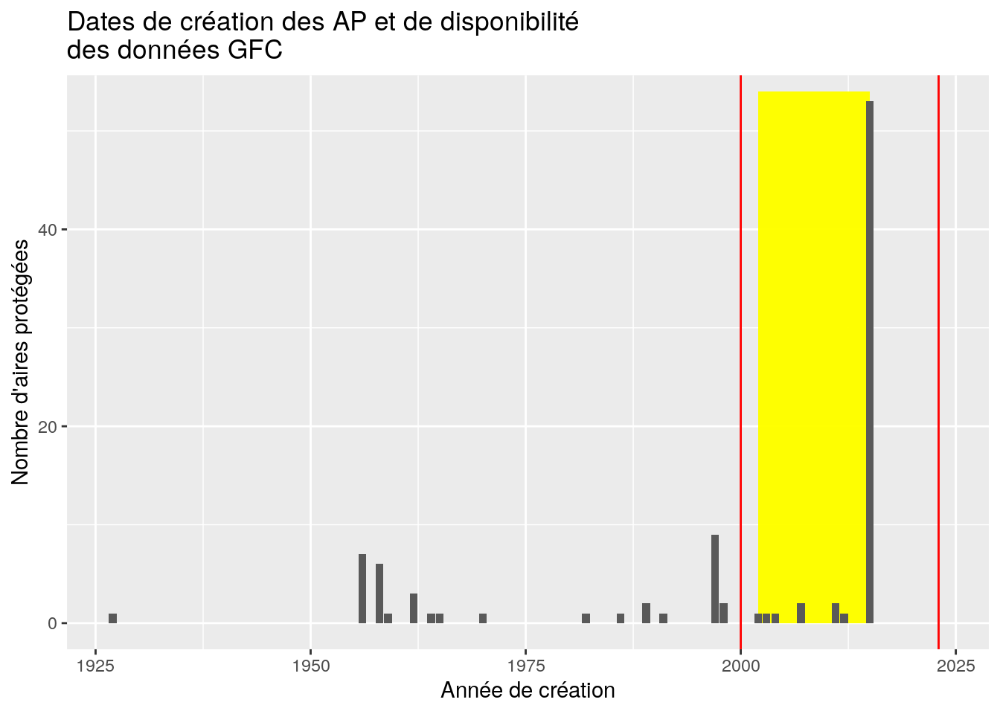
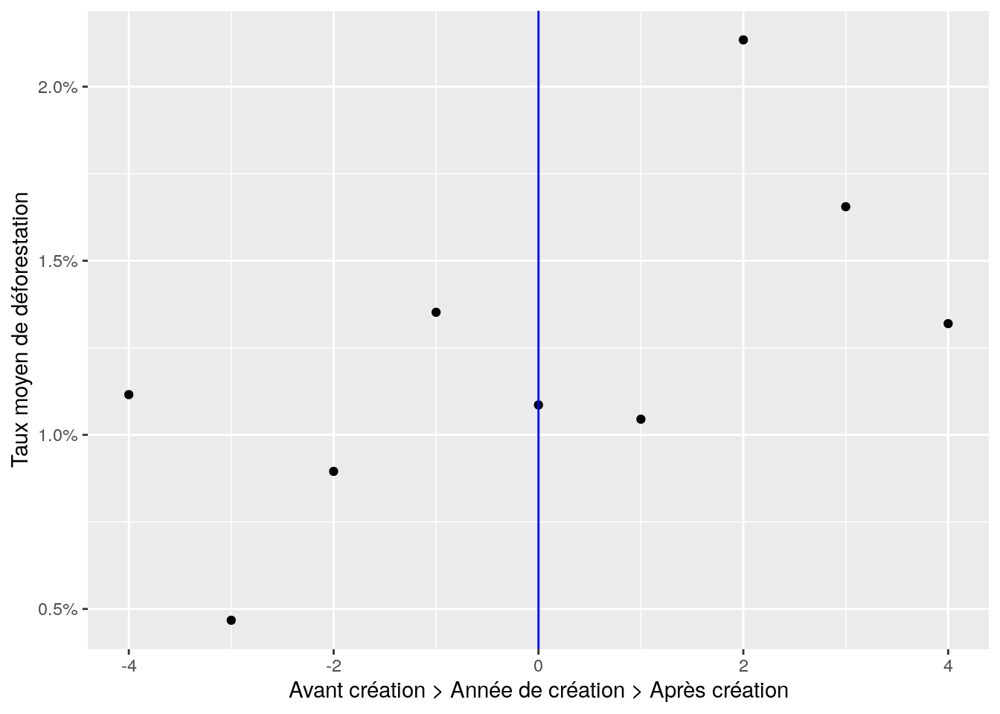

L’intuition initiale de cette stratégie est que le meilleur contrefactuel de l’AP est elle-même avant la mise en place du statut.
Ainsi, nous allons comparer pour chaque AP, les taux de déforestation entre les années qui précèdent la création de l’AP et les années qui suivent la création.
En revanche, comme vu dans la partie théorique, cette approche repose sur l’hypothèse que la seule différence entre les périodes est la mise en place de la politique.
Autrement dit, le seul facteur entre ces différentes périodes qui impactent le taux de dégradation des forêts est la mise en place de l’AP.
Ci-dessous, un tableau représentant les dates de création des aires protégées.
Code
library(tidyverse)library(lubridate)library(sf)library(gt)library(mapme.biodiversity)# Désactiver les notations scientifiquesoptions(scipen =999)# On reprend les données telles que préparées au chapitre 3AP_Vahatra <-read_rds("data/AP_Vahatra_mapme.rds")focus_stats <- AP_Vahatra %>%filter(an_creation >2000& an_creation <2023) %>%st_drop_geometry() %>%summarise(n =n(),an_min =min(an_creation),an_max =max(an_creation))AP_Vahatra %>%mutate(an_creation =year(date_creation)) %>%select(nom, an_creation) %>%ggplot(aes(x = an_creation)) +geom_rect(xmin = focus_stats$an_min, xmax = focus_stats$an_max, ymin =0, ymax =54, fill ="yellow", alpha =0.3) +geom_bar() +xlim(c(NA, 2024)) +geom_vline(xintercept =c(2000, 2023), col ="red", show.legend =TRUE) +ylim(NA, 53) +xlab("Année de création") +ylab("Nombre d'aires protégées") +ggtitle("Dates de création des AP et de disponibilité\ndes données GFC")

Les données mobilisées sont celles de Global Forest Cover (GFC) pour lesquelles on dispose d’un historique allant de 2000 à 2023. On se concentre sur les aires protégées dont le statut a été décrété entre ces deux dates.
Notre échantillon final contient 61 AP (sur les 98 initiales de la base de données Vahatra _ en jaune sur le graphique).
Nous normalisons les dates d’octroi du statut d’AP c’est à dire qu’on transforme les années calendaires (2002, 2003,…) en année relative à la mise en place de l’AP.
Par exemple, si une AP est créée en 2015 (qui correspondra à l’année 0), toutes les autres années seront exprimées relativement à celle-ci et donc, 2010 sera égale à -5 et 2020 à 5.
Cette transformation nous permet de pouvoir visualiser les données. Dans le tableau suivant, nous avons la moyenne annuelle de la surface (exprimée en hectare et en pourcentage) de l’AP qui a été déforestée pendant les année précédant et celles suivant la création de l’AP.
Code
sequence_AP <- AP_Vahatra %>%filter(an_creation >2000& an_creation <2023) %>%portfolio_long() %>%filter(variable =="treecover") %>%mutate(an_valeur =year(datetime), tx_defor =ifelse(nom !=lag(nom), NA, -((value -lag(value)) /lag(value))),an_val_crea = an_valeur - an_creation,sequence_crea =ifelse(an_val_crea <0, "Avant création",ifelse(an_val_crea >0, "Après création", "Année de création")),sequence_crea =factor(sequence_crea, levels =c("Avant création", "Année de création","Après création")))moy_defor <- sequence_AP %>%st_drop_geometry() %>%group_by(sequence_crea) %>%summarise(`Déforestation annuelle moyenne`=mean(tx_defor, na.rm =TRUE))gt(moy_defor) %>%fmt_percent(columns =`Déforestation annuelle moyenne`) %>%tab_header(title ="Déforestation avant et après création de l'AP") %>%cols_label(sequence_crea =" ") %>%tab_source_note(c("Source : GFC et association Vahatra.","Calculs des auteurs."))
Déforestation avant et après création de l'AP
Déforestation annuelle moyenne
Avant création
0.67%
Année de création
1.09%
Après création
1.26%
Source : GFC et association Vahatra.
Calculs des auteurs.
D’après le tableau ci-dessus, quelles conclusions pouvons-nous tirer ?
Voici une vue des valeurs 0 chaque année.
Code
sequence_AP %>%st_drop_geometry() %>%filter(an_val_crea >-5& an_val_crea <5) %>%group_by(an_val_crea) %>%summarise(defor_moy =mean(tx_defor, na.rm =TRUE)) %>%ggplot(aes(x = an_val_crea, y = defor_moy)) +geom_point() +geom_vline(xintercept =0, col ="blue") +scale_y_continuous(labels = scales::label_percent()) +xlab("Avant création > Année de création > Après création") +ylab("Taux moyen de déforestation")

Exercice: Quelles analyses pourraient être menées pour compléter ces premiers résultats ?